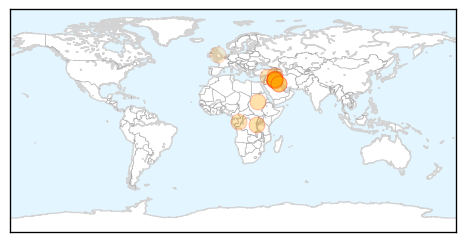
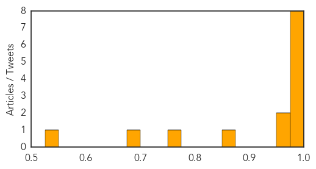

Ebola
30-Day Web Trend
5 alerts, 0 warnings

30-Day Twitter Trend
21 alerts, 0 warnings

Article Locations

Article Confidences

Top Articles:
- 1.000
- Sierra Leone is free of Ebola, 18 months and 4,000 deaths after outbreak
- 1.000
- Sierra Leone’s Ebola Outbreak Is Officially Over — But the Country Is Still Recovering
- 1.000
- WHO declares end of Ebola outbreak in Sierra Leone, but neighbour Guinea struggles to end virus
- 1.000
- Sierra Leone declared free of Ebola
- 1.000
- Sierra Leone’s Ebola Outbreak Is Over, WHO Says
- 1.000
- Sierra Leone declared free of Ebola, as Guinea struggles
- 1.000
- Sierra Leone Declared Free of Ebola Transmissions
- 1.000
- Sierra Leone's Ebola Outbreak Is Over, WHO Says : The Two-Way : NPR
- 1.000
- Ebola: Science should be at the service of survivors
- 1.000
- WHO declares end of Ebola outbreak in Sierra Leone
- 1.000
- Ebola: After learning hard lessons Sierra Leone is better prepared should the disease return
- 1.000
- Ebola: The epidemic's timeline
- 1.000
- Sierra Leone officially declared free of Ebola: WHO
- 1.000
- Sierra Leone Declared Free of Ebola Virus by UN Health Agency
- 1.000
- WHO commends Sierra Leone for stopping Ebola virus transmission - WHO
- 1.000
- Ebola: The epidemic's timeline - Sierra Leone
- 1.000
- Sierra Leone is free of Ebola, says the WHO
- 1.000
- WHO declares end of Ebola outbreak in Sierra Leone, but neighbour Guinea struggles to end virus
- 1.000
- Celebrations as WHO declares Sierra Leone Ebola-free
- 0.999
- Sierra Leone declared free of Ebola after outbreak that killed almost 4,000 (From Wiltshire Business Online)
- 0.999
- Sierra Leone celebrates end of Ebola epidemic
- 0.999
- Scots praised for role in Sierra Leone beating Ebola
- 0.999
- WHO declares end of Ebola outbreak in Sierra Leone
- 0.999
- Sierra Leone declared free of Ebola after outbreak that killed almost 4,000 « Shropshire Star
- 0.999
- Sierra Leone celebrates end of Ebola epidemic
- 0.999
- UPDATE 1-Sierra Leone celebrates end of Ebola epidemic
- 0.999
- WHO: Sierra Leone is free of Ebola
- 0.999
- WHO to declare end of Ebola in Sierra Leone
- 0.999
- Ebola ends in Sierra Leone
- 0.999
- With Sierra Leone Expected To Be Declared Ebola-Free On Saturday, Guinea
- 0.999
- Sierra Leone declared Ebola free after 42 days without reports of the virus
- 0.999
- Sierra Leone declared free of Ebola after outbreak that killed almost 4,000
- 0.999
- The end of Ebola in Sierra Leone
- 0.999
- Sierra leone declared free of ebola after outbreak that killed almost 4,000
- 0.999
- Sierra Leone declared free of Ebola after outbreak that killed almost 4,000
- 0.999
- WHO Declares Sierra Leone Ebola-Free
- 0.999
- Sierra Leone celebrates end of Ebola epidemic
- 0.999
- WHO Director-General addresses Princeton - Fung Global Forum on lessons learned from the Ebola crisis - Sierra Leone
- 0.999
- Sierra Leone declared free of Ebola after outbreak that killed almost 4,000 « Guernsey Press
- 0.999
- The end of Ebola in Sierra Leone
- 0.998
- WHO declares Sierra Leone free of Ebola
- 0.998
- Sierra Leone celebrates end of Ebola epidemic
- 0.998
- Sierra Leone celebrates end of Ebola epidemic
- 0.998
- WHO declares end of Ebola outbreak in Sierra Leone
- 0.998
- Sierra Leone Counts Down Until Ebola-Free Declaration
- 0.998
- Britain hails end of Ebola outbreak in Sierra Leone - Xinhua
- 0.998
- Sierra Leone Declared Free from Ebola, as Guinea Struggles
- 0.998
- Sierra Leone celebrates end of Ebola epidemic
- 0.998
- Ebola Echo from Saudi Arabia: Ambassador Joins Pres. Koroma in hailing Sierra Leoneans
- 0.997
- Sierra Leone celebrates end of Ebola epidemic
Showing top 50 articles...
Top Tweets:
- 0.998
- WHO commends Sierra Leone for stopping Ebola virus transmission - World Health Organization https://t.co/IgzK47qyhx ebola EVD
- 0.988
- World Health Organization (WHO) declares Sierra Leone free of Ebola - https://t.co/HzrV4q7mDh ebola
- 0.988
- WHO commends Sierra Leone for stopping Ebola virus transmission - https://t.co/ta7jAz8Z5J ebola
- 0.982
- Ebola outbreak: Sierra Leone to be declared disease-free - https://t.co/UWMTbjvHvL ebola
- 0.979
- Sierra Leone May Be Ebola-Free But The Virus Still Casts A Shadow - NPR https://t.co/fS6uepVNWW ebola EVD
- 0.976
- Sierra Leone May Be Ebola-Free But The Virus Still Casts A Shadow - https://t.co/O7Lhdah5sq ebola
- 0.974
- WHO to declare end of Ebola outbreak in Sierra Leone - https://t.co/IJIf57vIq7 ebola
- 0.973
- Ebola outbreak: Sierra Leone declared free of disease - https://t.co/sbhWpRvarH ebola
- 0.971
- Statement on the end of the Ebola outbreak in Sierra Leone - https://t.co/4UWNwkelQM ebola
- 0.971
- Sierra Leone Celebrates The End Of The Ebola Outbreak - https://t.co/JH0cxHydnj ebola
- 0.968
- World Health Organisation declares Sierra Leone Ebola-free - https://t.co/SQ1MIvyrNv ebola
- 0.966
- @WHO Official Statement: WHO declares that Ebola virus transmission has been stopped in Sierra Leone.
- 0.964
- Sierra Leone celebrates end of Ebola epidemic - Reuters https://t.co/pUIKXRWlWZ ebola EVD
- 0.964
- RT: Midnight has passed in SierraLeone and so has the Ebola virus disease epidemic there. 42 days without a case. CONGRATULAT…
- 0.963
- Sierra Leone celebrates end of Ebola epidemic - Irish Times https://t.co/K7SnL3XdU2 ebola EVD
- 0.963
- Ebola outbreak: Sierra Leone declared free of disease - BBC News https://t.co/QgtR9jRXUx ebola EVD
- 0.961
- Sierra Leone celebrates end of Ebola epidemic - https://t.co/nHOqFbVYPt ebola
- 0.961
- Sierra Leone celebrates end of Ebola epidemic - https://t.co/mvg99pKv1F ebola
- 0.961
- Cracking the Code of the Ebola Virus - https://t.co/fMU2ZrqREq ebola
- 0.960
- Cudurka Ebola Kama Jiro Sierra Leone - https://t.co/CasmpKSvkf ebola
- 0.958
- Sierra Leone celebrates end of Ebola epidemic after nearly 4000 deaths - https://t.co/LprBAqToTj ebola
- 0.956
- Health Officials: Sierra Leone Declared Free of Ebola Transmissions - https://t.co/lJUo6sKSfA ebola
- 0.955
- Sierra Leone celebrates end of Ebola epidemic that killed 4000 people - https://t.co/vKbrmPjMiI ebola
- 0.953
- Sierra Leone after Ebola: What next? - https://t.co/kUrXqt6SA6 ebola
- 0.946
- RT: The ebola hotline no is 117 Sierra Leone declared free of Ebola 11/7. ebolafreesierraleone
- 0.938
- Ebola Eliminated In Sierra Leone. - https://t.co/u3EllbHDh4 ebola
- 0.936
- Amref Health Africa Ebola study published in Pan African Medical Journal - https://t.co/IpTCbsVSk7 ebola
- 0.930
- Sierra Leone set to be declared 'Ebola free' after 42 days without reports of the virus - https://t.co/daP4XYT8Bj ebola
- 0.928
- Sierra Leone celebrates end of Ebola - https://t.co/U1wwNhfpdE ebola
- 0.925
- WHO declares Sierra Leone Ebola free - https://t.co/7EMAMin3R0 ebola
- 0.924
- Ebola has been officially eliminated from Sierra Leone - https://t.co/hf7z1xlpCV ebola
- 0.920
- WHO declares Sierra Leone free of Ebola - https://t.co/TC2s47Ukm5 ebola
- 0.920
- Sierre Leone declared free of Ebola virus - https://t.co/SY5s8WaALc ebola
- 0.919
- Sierra Leone declared free of Ebola by World Health Organisation - Western Morning News https://t.co/poxc5mjpYt ebola EVD
- 0.917
- Sierra Leone marks end of Ebola - The Nation Newspaper https://t.co/e8nHVzIkxf ebola EVD
- 0.917
- Ebola: WHO 'delayed Sierra Leone state of emergency' - https://t.co/ynM3r09wTI ebola
- 0.915
- WHO: Sierra Leone is free of Ebola - https://t.co/1g0peoLBGk ebola
- 0.915
- Sierra Leone to be cleared of Ebola - https://t.co/KgjqdVZ1Kf ebola
- 0.915
- Ebola crisis: Sierra Leone President Koroma thanks 'hero' UK medics - https://t.co/4b3IqsoIXa ebola
- 0.913
- WHO to declare end of Ebola in Sierra Leone - https://t.co/eLD9tKHMuW ebola
- 0.913
- WHO to declare end of Ebola in Sierra Leone - https://t.co/bmISXdE7Bz ebola
- 0.913
- WHO to declare end of Ebola in Sierra Leone - https://t.co/2aISskBiQP ebola
- 0.912
- WHO officially declares Sierra Leone Ebola-free - https://t.co/ciRu3928KV ebola
- 0.911
- WHO to declare Sierra Leone 'free of Ebola' - FRANCE 24 https://t.co/pX1ur6QTTC ebola EVD
- 0.911
- Sierra Leone is free of Ebola says the WHO - https://t.co/uxjl1lr7Zw ebola
- 0.908
- Joyful day: Sierra Leone's Ebola outbreak is declared over. Herculean struggle. Admiration & gratitude to the many who fought this battle.
- 0.894
- Sierra Leone Counts Down Until Ebola-Free Declaration - https://t.co/Sl1KAT0cl1 ebola
- 0.888
- Sierra Leone is Ebola free after an 18-month outbreak killed almost 4000 in the country WHO ... - https://t.co/ug52gi9Hep ebola
- 0.883
- Scots praised for role in Sierra Leone beating Ebola - https://t.co/g9laVIdSQb ebola
- 0.883
- Cautiously optimistic as CDC works w. Sierra Leone to ensure that prevention measures stay in place & no new Ebola cases are identified.
Showing top 50 tweets...
Cholera
30-Day Web Trend
4 alerts, 0 warnings

30-Day Twitter Trend
6 alerts, 0 warnings

Article Locations
Article Confidences
Top Articles:
- 0.998
- Kuwait denies rumors of cholera outbreak in country
- 0.996
- Kuwaiti Health Ministry denies rumors on cholera outbreak in country
- 0.996
- Iraq: amid fears cholera outbreak may worsen, UN agencies step up support to government-led response
- 0.995
- Health Ministry denies rumors on cholera outbreak
- 0.990
- KUNA : Only seven cholera-infected cases detected in Bahrain, cured
- 0.989
- Cholera risk from unreliable tap water supply
- 0.989
- Government declares end to cholera outbreak
- 0.988
- Concern over Iraq cholera outbreak prompts accelerated response
- 0.973
- Flooding may lead to worsening of cholera outbreak in Iraq: UNICEF
- 0.954
- Cholera in Kuwait? - Kuwait Times
- 0.863
- Reduce Dependency on Raw Material Exports, Imports – Experts
- 0.764
- Cholera spreads from Iraq to Syria, Kuwait, Bahrain: Unicef
- 0.692
- Heavy rains will worsen the Cholera epidemic in Iraq, Humanitarian agencies
- 0.549
- Victorian-Era diseases making a comeback in England -- Health & Wellness -- Sott.net
Top Tweets:
-
No tweets found for Nov 07, 2015